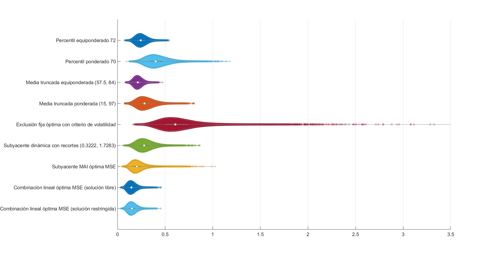
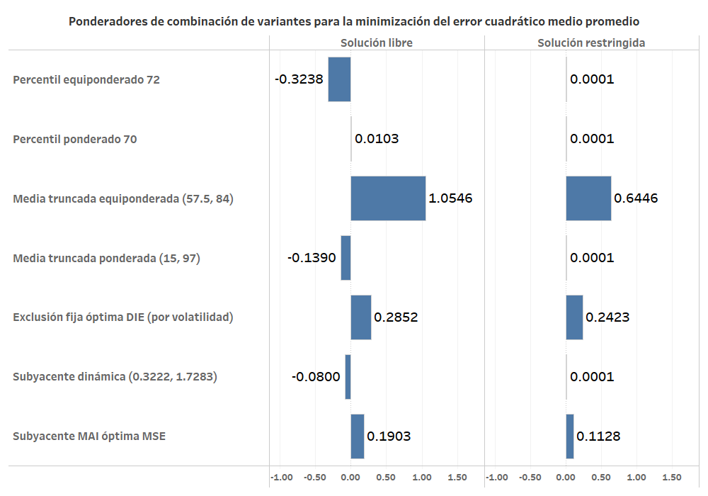
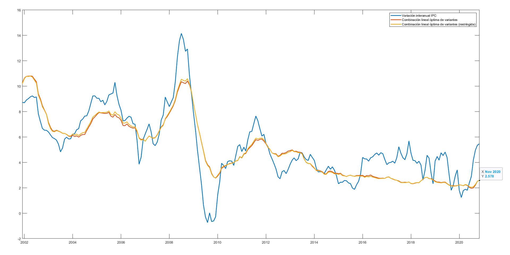
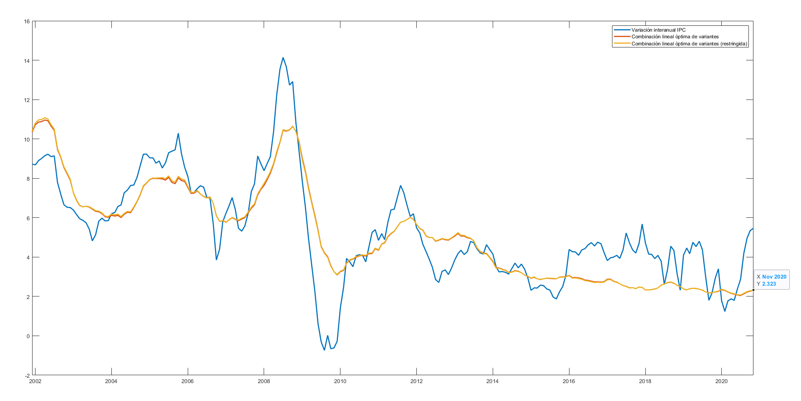
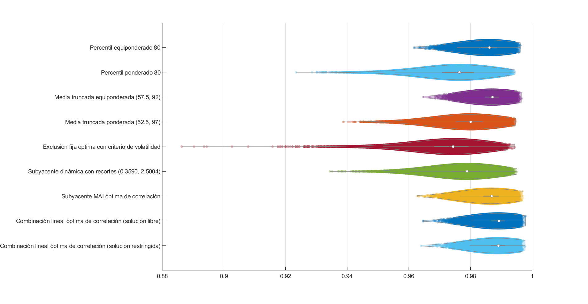
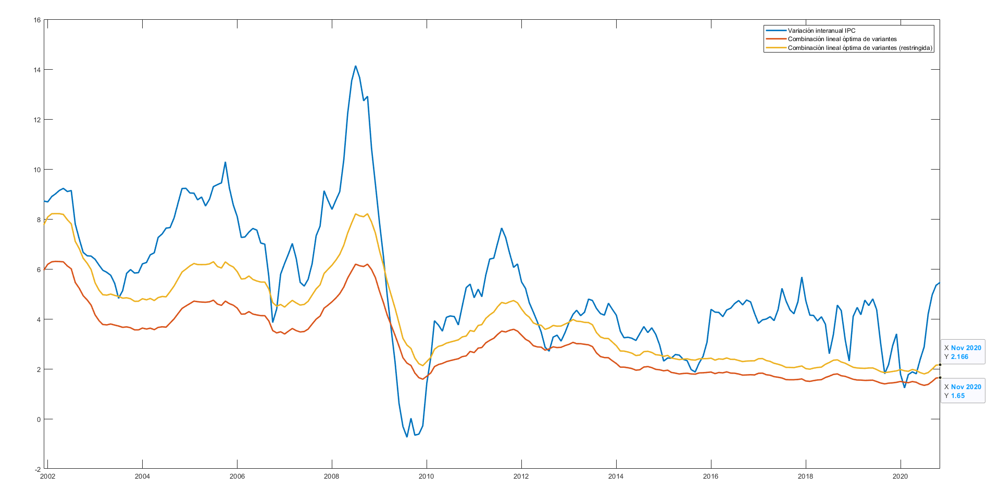
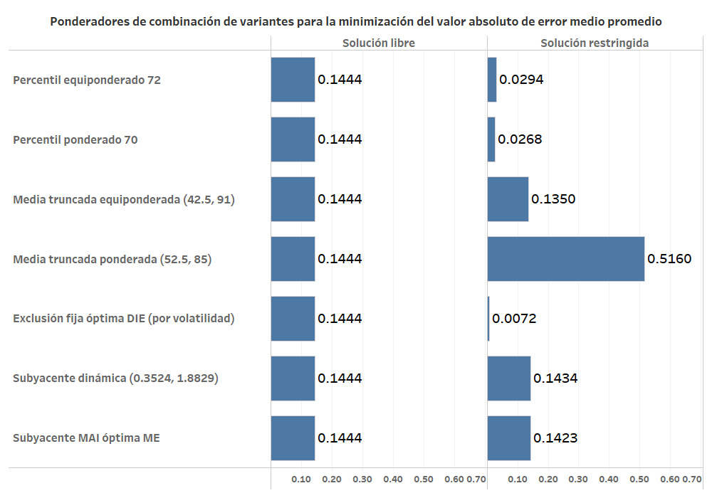
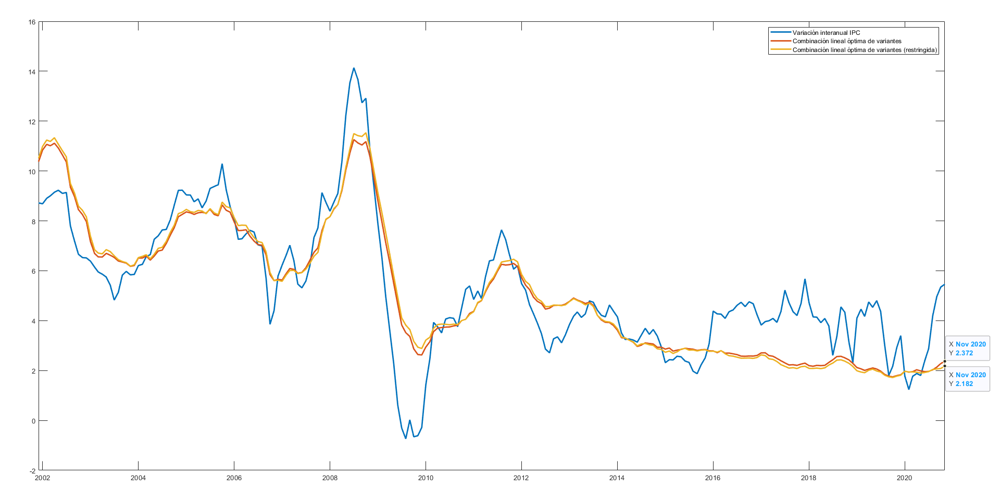

Optimización de la combinación lineal de variantes de medidas de inflación subyacente¶
Combinación lineal que minimiza el MSE promedio¶
- Se aplica la misma metodología de combinación lineal óptima utilizada en la optimización de la inflación subyacente MAI.
- La metodología de combinación se aplica utilizando las medidas de inflación con menor MSE de cada método de cómputo.
- Se obtiene una solución libre y una solución restringida (ligeramente subóptima).
- En la variante de optimización restringida:
- Se requiere que los ponderadores sean positivos y que su suma sea igual a 1.
- Se utiliza como punto inicial una distribución uniforme de ponderadores y una distribución de ponderadores construidos con base en el inverso de los valores de MSE promedio de cada medida y se obtienen los mismos resultados.
Minimización de MSE promedio¶
- Medidas de inflación incluidas en la combinación lineal y se obtienen los siguientes ponderadores.
| Medida de inflación | \overline{\text{MSE}} | \hat{w}_{\text{libre}} | \hat{w}_{\text{rest}} |
|---|---|---|---|
| Percentil equiponderado 72 | 0.2498 | -0.3238 | 0.0001 |
| Percentil ponderado 70 | 0.4149 | 0.0103 | 0.0001 |
| Media truncada equiponderada (57.5, 84) | 0.2171 | 1.0546 | 0.6446 |
| Media truncada ponderada (15, 97) | 0.2948 | -0.1390 | 0.0001 |
| Exclusión fija óptima con criterio de volatilidad | 0.6414 | 0.2852 | 0.2423 |
| Subyacente dinámica con factores (0.3222, 1.7283) | 0.2906 | -0.0800 | 0.0001 |
| Subyacente MAI óptima MSE | 0.2162 | 0.1903 | 0.1128 |


- Combinación lineal óptima MSE promedio (solución libre)
\overline{\text{MSE}} = 0.151965
-
Suma de ponderadores: 0.9975
-
Combinación lineal óptima MSE promedio (solución restringida)
\overline{\text{MSE}} = 0.156907
- Suma de ponderadores: 1.0000
Trayectorias históricas de medidas de inflación que minimizan el MSE promedio¶

Ejercicio de optimización sin la medida de exclusión fija¶
- En este ejercicio se lleva a cabo la minimización del error cuadrático medio de la combinación lineal de medidas de inflación.
- Se excluye la medida de inflaciíon denominada Exclusión fija óptima con criterio de volatilidad
Minimización de MSE¶
- Medidas de inflación incluidas en la combinación lineal:
| Medida de inflación | \overline{\text{MSE}} | \hat{w}_{\text{libre}} | \hat{w}_{\text{rest}} |
|---|---|---|---|
| Percentil equiponderado 72 | 0.2498 | -0.3852 | 0.0000 |
| Percentil ponderado 70 | 0.4149 | 0.0642 | 0.0499 |
| Media truncada equiponderada (57.5, 84) | 0.2171 | 0.8457 | 0.4616 |
| Media truncada ponderada (15, 97) | 0.2948 | 0.0487 | 0.0691 |
| Subyacente dinámica con factores (0.3222, 1.7283) | 0.2906 | 0.0004 | 0.0095 |
| Subyacente MAI óptima MSE | 0.2162 | 0.4153 | 0.4099 |

- Combinación lineal óptima MSE promedio (solución libre)
\overline{\text{MSE}} = 0.192694
- Suma de ponderadores: 0.9891
- Combinación lineal óptima MSE promedio (solución restringida)
\overline{\text{MSE}} = 0.193813
- Suma de ponderadores: 1.0000
Trayectorias históricas de medidas de inflación que minimizan el MSE promedio¶

Combinación lineal que maximiza la correlación lineal promedio¶
- Se aplica la misma metodología de combinación lineal óptima utilizada en la optimización de la inflación subyacente MAI para maximizar el coeficiente de correlación lineal de evaluación.
- La función objetivo a optimizar es la correlación promedio.
- La metodología de combinación se aplica utilizando las medidas de inflación con mayor correlación promedio de cada método de cómputo.
- Se obtiene una solución libre y una solución restringida (ligeramente subóptima).
Maximización del coeficiente de correlación lineal promedio¶
- Medidas de inflación incluidas en la combinación lineal:
| Medida de inflación | \bar{\rho} | \hat{w}_{\text{libre}} | \hat{w}_{\text{rest}} |
|---|---|---|---|
| Percentil equiponderado 80 | 0.985750 | 0.0859 | 0.1127 |
| Percentil ponderado 80 | 0.975427 | 0.0071 | 0.0000 |
| Media truncada equiponderada (57.5, 92) | 0.986799 | 0.1380 | 0.1548 |
| Media truncada ponderada (52.5, 97) | 0.979170 | -0.0191 | 0.0000 |
| Exclusión fija óptima con criterio de volatilidad | 0.973143 | 0.1352 | 0.1597 |
| Subyacente dinámica con recortes (0.3590, 2.5004) | 0.978045 | -0.0473 | 0.0000 |
| Subyacente MAI óptima de correlación | 0.986457 | 0.5140 | 0.5728 |


- Combinación lineal óptima para correlación promedio (solución libre)
\overline{\rho} = 0.9887851
-
Suma de ponderadores: 0.8137
-
Combinación lineal óptima para correlación promedio (solución restringida)
\overline{\rho} = 0.9886683
- Suma de ponderadores: 1.0000
Trayectorias históricas de medidas de inflación que maximizan la correlación lineal promedio¶

Combinación lineal que minimiza el valor absoluto de error medio promedio¶
- Se aplica la misma metodología de combinación lineal óptima utilizada en la optimización de la inflación subyacente MAI para minimizar el valor absoluto de error medio promedio.
- La metodología de combinación se aplica utilizando las medidas de inflación con menor valor asboluto de error medio promedio de cada método de cómputo.
- Se obtiene una solución libre y una solución restringida.
Minimización del valor absoluto de error medio promedio¶
- Medidas de inflación incluidas en la combinación lineal:
| Medida de inflación | \text{ME} | \hat{w}_{\text{libre}} | \hat{w}_{\text{rest}} |
|---|---|---|---|
| Percentil equiponderado 72 | -0.0620 | 0.1444 | 0.0294 |
| Percentil ponderado 70 | -0.0698 | 0.1444 | 0.0268 |
| Media truncada equiponderada (42.5, 91) | -0.0009 | 0.1444 | 0.1350 |
| Media truncada ponderada (52.5, 85) | 0.0116 | 0.1444 | 0.5160 |
| Exclusión fija óptima con criterio de volatilidad | -0.3053 | 0.1444 | 0.0072 |
| Subyacente dinámica con factores (0.3524, 1.8829) | 0.0000 | 0.1444 | 0.1434 |
| Subyacente MAI óptima ME | 0.0000 | 0.1444 | 0.1423 |

- Combinación lineal óptima para |\overline{\text{ME}}| (solución libre)
|\overline{\text{ME}}| = 0
-
Suma de ponderadores: 1.0109
-
Combinación lineal óptima para |\overline{\text{ME}}| (solución restringida)
|\overline{\text{ME}}| = 0
- Suma de ponderadores: 1.0000
Trayectorias históricas de medidas de inflación que minimizan el valor absoluto de error medio promedio¶
